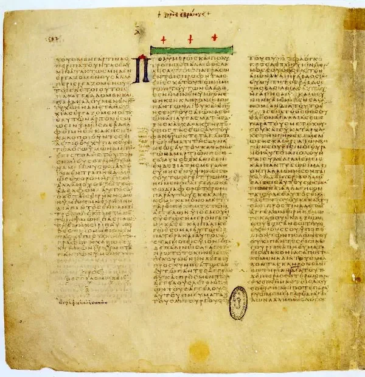
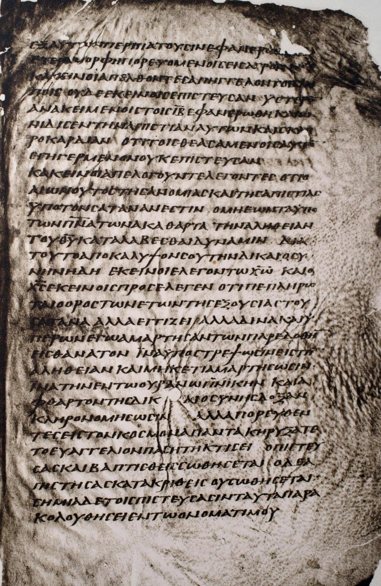
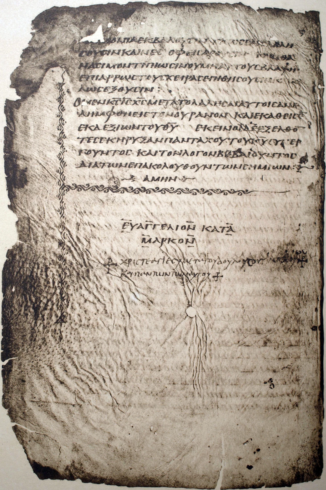

아직 펼치지 않은 카드성경이라는 책을 읽는 책 · 3바트 어만 『성경 왜곡의 역사』인쇄기가 없던 천 년 넘는 동안 성경은 사람 손으로 베껴졌어요. 베껴 쓰는 사람이 실수를 하면 어떻게 되었을까요?옛날에는 성경을 손으로 한 글자씩 베껴 썼대.
4~5세기 · 1906년이집트 · 워싱턴 프리어 미술관
바트 어만 『성경 왜곡의 역사』
1906년 12월, 이집트 카이로 근처 기자. 미국인 수집가가 산 오래된 복음서 사본의 마가복음 끝에, 지금 남은 어느 그리스어 사본에도 없는 열여섯 줄이 있었어요. 사본 한 쪽을 하나하나 짚으며 그 줄들을 찾아보세요.
옛날에 손으로 베껴 쓴 성경이 있어. 그런데 이 책에만 다른 책에 없는 말이 들어 있대. 어디 있는지 같이 찾아볼까?
검수 전 시안이에요(기준서 1판). 사본에 더해진 문장의 우리말은 브루스 메츠거의 영어 번역을 이 안내서가 옮긴 것이고, 사본 속 손글씨를 이 안내서가 직접 읽어 옮기지는 않았어요. 학자들의 해석이 갈리는 곳은 양쪽 의견을 함께 적었어요. 상상은 ‘눈 감고 상상해 보기’에만 썼어요.
시안 확인용카드 단계 미리 보기
1
이 사본에만 있는 열여섯 줄
1906년 12월, 미국의 수집가 찰스 랭 프리어가 이집트에서 오래된 그리스어 성경 사본들을 샀어요. 그 가운데 4~5세기에 베껴 쓴 네 복음서 사본이 있었어요. 지금 워싱턴 스미스소니언의 프리어 미술관에 있어서 ‘워싱턴 사본’이라 불러요.
이 사본의 마가복음 16장 14절 뒤에는, 지금 남은 그리스어 사본 가운데 이 사본에만 있는 문장이 이어져요. 학자들은 이 문장을 ‘프리어 로기온’(프리어 사본의 말씀)이라 불러요. 아래 쪽에서 그 자리를 찾아보세요.
사본 위 숫자를 눌러 보세요. 어디까지가 다른 사본과 같은 글이고, 어디부터가 이 사본에만 있는 글일까요?

워싱턴 사본, 마가복음 16장 12~17절이 있는 쪽 · 4~5세기 이집트 · 스미스소니언 프리어 미술관 · 작가 모름 · 퍼블릭 도메인 · 위키미디어 공용
그림 위의 숫자나 아래 번호를 눌러 보세요.
여섯 곳을 다 찾았어요. 한 쪽 안에, 다른 어느 그리스어 사본에도 없는 열여섯 줄이 숨어 있었어요.
4~5세기의 학자 히에로니무스(제롬)는 이 문장의 일부를 라틴어로 옮겨 적고, ‘어떤 사본들, 특히 그리스어 사본에’ 있다고 했어요. 워싱턴 사본은 그 말이 사실이었음을 보여 주었어요.
누가, 왜 이 문장을 더했는지는 알 수 없어요. 메츠거는 14절에서 열한 제자를 무섭게 꾸짖는 말을 누그러뜨리려고 누군가 더했을 것이라 보았고, 허타도는 이 사본을 쓰고 읽던 이름 모를 사람이 더했을 것이라 봐요. 이 문장은 다른 사본으로 퍼지지 못했어요(마가복음 16장).
아주 옛날 성경 한 쪽이야. 다른 성경에는 없는 말이 여기에만 있대!
물어보기똑같이 베꼈는데 왜 이 책에만 다른 말이 있을까?
2
마지막 쪽의 짧은 기도
이 사본의 마지막 쪽이에요. 마가복음이 끝난 자리에 띠 장식과 끝맺음 글이 있고, 그 아래 십자 표시 사이에 조금 흘려 쓴 글씨 두 줄이 있어요.
이 사본을 연구해 펴낸 학자 헨리 샌더스는 이것을 ‘티모테오라는 사람을 위한 기도’라고 했어요. 이 사본이 어디서 왔는지 알려 주는 단서는 이 기도뿐이라고요.

샌더스는 이 기도를 기자의 셋째 피라미드 가까이 있던 수도원의 ‘티모테오 성당’과 이어 보았어요. 사본을 베끼고 읽던 사람들도 이름과 기도를 남긴 한 사람 한 사람이었어요.
4~5세기 이집트의 필사자라면, 본으로 받은 사본에 처음 보는 긴 문장이 있을 때 어떻게 할까요?
책을 다 베낀 다음, 누군가 맨 끝에 짧은 기도를 적어 넣었어.
물어보기책을 다 쓰고 맨 끝에 한마디 남긴다면, 뭐라고 쓸래?
눈 감고 상상해 보기
등잔 불빛 아래, 필사자가 본이 되는 사본을 옆에 펴 놓고 한 줄씩 베껴 써요. 갈대 펜이 양피지를 긁는 사각 소리, 잉크 냄새. 마가복음 16장 14절을 다 쓴 펜 끝이, 본에 적힌 낯선 문장 앞에서 잠깐 멈춰요.
눈을 감아 봐. 작은 등잔불 아래에서 누가 한 글자씩 베껴 쓰고 있어. 사각사각 펜 소리. 어? 처음 보는 말이 나왔어!
나의 자리
전해 들은 이야기와 처음 이야기가 달랐던 경험이 있나요? 무엇이 달라져 있었나요?
‘말 전하기’ 놀이를 해 본 적 있어? 끝에는 말이 어떻게 바뀌었어?
마음에 닿는 한 줄을 고르거나 직접 써 보세요. 한 줄을 남기면 이 자리의 도장이 찍혀요. 이 기기에만 저장돼요.
더 깊이
궁금한 칸만 펼쳐 읽어도 괜찮아요.
알고 보면
사본 손으로 베껴 쓴 책이에요. 인쇄기가 없던 때 성경은 모두 이렇게 전해졌어요.
워싱턴 사본 4~5세기 이집트에서 쓴 네 복음서 사본으로, 양피지에 쓴 복음서 사본 가운데 세 번째로 오래되었어요. 187장에 한 쪽 서른 줄씩 썼고, 복음서가 마태·요한·누가·마가 차례로 놓여 있어요.
프리어 로기온 ‘로기온’은 그리스어로 ‘말씀’이에요. 프리어가 산 사본에만 남은 예수의 말이라서 이렇게 불러요.
히에로니무스 성경을 라틴어로 옮긴 학자예요. 그가 이 문장을 알고 있었다는 기록 덕분에, 이 문장이 워싱턴 사본 말고 다른 그리스어 사본들에도 있었음을 알 수 있어요.
아주 드문 전시 빛에 약하고 쉽게 상해서 거의 꺼내지 않아요. 2013년 11월부터 이듬해 2월까지 열린 전시 전에, 마지막으로 전시한 해는 2006년이었어요.
어만의 책과 함께
바트 어만은 『성경 왜곡의 역사』(원제 Misquoting Jesus, 2005)에서, 사본을 베낀 사람들이 실수로 또는 일부러 글을 바꾼 자리들을 보여 줘요. 마가복음의 마지막 열두 절(16장 9~20절)도 그 가운데 하나예요.
어만은 이 열두 절이 마가가 처음 쓴 끝맺음 뒤에 더해졌다는 것이 학자들의 압도적인 결론이라고 설명해요. 마가복음의 가장 이른 본문을 다시 세우는 최신 비평판(ECM)도 마가복음이 8절에서 끝난다는 결론을 다시 확인했어요. 4세기의 시나이 사본과 바티칸 사본이 그렇게 끝나요.
반대 의견도 있어요. 제임스 스냅(2022)은 그리스어 사본 1,653개가 9~20절을 담고 있고 8절에서 끝나는 그리스어 사본은 셋뿐이라며, 이 부분을 정경으로 받아들여야 한다고 봐요.
우리말판은 2006년 처음 나왔고, 2026년 1월 갈라파고스에서 개정증보판(민경식 옮김)이 나왔어요.
기록마다 다른 점
산 곳 샌더스는 프리어가 1906년 12월 19일 카이로 근처 기자에서 상인 알리에게 샀다고 적었어요. 스미스소니언 기록보관소는 ‘카이로에서’ 샀다고 적었어요.
어디서 왔나 스미스소니언은 이 사본들이 기자 근처 ‘포도원지기 수도원’에서 나왔을 수 있다고만 해요. 1906년 전의 내력은 분명하지 않아요.
마가복음의 끝 8절에서 끝났다고 보는 학자가 많지만, 9~20절이 정경의 끝맺음이라고 보는 학자도 있어요(‘어만의 책과 함께’).
여섯 곳 모두 금박
사본 위 여섯 곳을 모두 찾아 읽으면 카드에 금박이 입혀져요.
사본 위 여섯 곳을 모두 찾아 읽기
필사자의 자리에서 채색
둘 가운데 하나만 해도 카드가 채색돼요.
필사자라면 낯선 문장을 어떻게 할지 고르기
아이와 함께 ‘영화처럼 보기’를 끝까지 보기
근거 보기 (10)
- 스미스소니언 프리어 미술관 보도자료(2013.11.6) — 세 번째로 오래된 양피지 복음서, 4~5세기, 1906년 기자, 프리어 로기온, 드문 전시(2006년 뒤 처음)
- 스미스소니언 기록보관소: 프리어가 성경 사본을 사다 — 카이로, 상인 알리 아라비, 포도원지기 수도원, 마태·요한·누가·마가 차례, 프리어 로기온
- History of Information: 워싱턴 사본 — 샌더스의 기록(1906.12.19 기자, 상인 알리), 티모테오를 위한 기도, 187장·30줄
- BAS: 마가복음 16장의 다른 읽기를 담은 5세기 사본 — 이 쪽 9~24줄의 더해진 글, 메츠거의 영어 번역, 히에로니무스의 말
- 래리 허타도, 워싱턴 사본의 마가복음 끝맺음(블로그 글) — 이 사본에만 있음, 이름 모를 사람의 덧붙임, 메츠거가 본 까닭, 퍼지지 못함
- 제임스 스냅, 「마가복음 긴 끝맺음을 지지하며」(Text & Canon, 2022.6.1) — 1,653개, 8절에서 끝나는 그리스어 사본 셋, 끝맺음에 단 메모
- H. A. G. 호턴, 「Unfinished Business」(New Testament Studies 69, 2023) — 최신 비평판(ECM)의 결론, 시나이·바티칸 사본의 8절 끝맺음
- 바트 어만, Misquoting Jesus 팟캐스트 163회(2026.8.16) — 마가복음 16장 9~20절은 나중에 더해졌다는 결론
- 대한성서공회 개역개정: 마가복음 16장 — 14~16절, 9~20절의 【 】 괄호
- 예스24: 성경 왜곡의 역사 개정증보판(갈라파고스, 2026, 민경식 옮김)
그림·사진·소리 출처
‘처음 만나는 기독교 문화’의 깊은 카드예요. 카드 단계와 남긴 글은 이 기기에만 저장돼요.